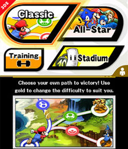
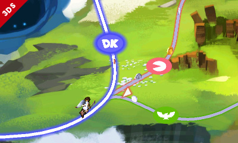
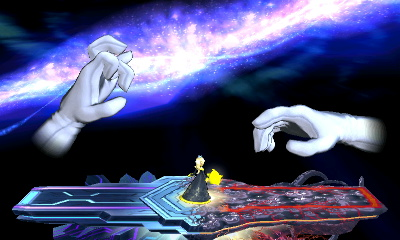
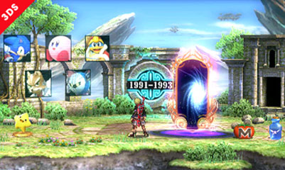
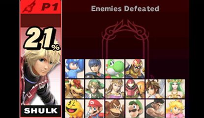

Super Smash Bros 4 Guide

SSB4 Classic/All-Star
Press Any Button To Begin
In Classic and All-Star, players choose one character to face multiple challenges against others controlled by AIs. Both have a changable difficulty, the use of all the items, and have similar prizes, including equipment and trophies, and an exclusive trophy at the ench of each round of either. These are usually done solo, and present individual challenges for players. Only All-Star has the option of two-player mode. The main difference is that Classic's stages change from every time played, the prize system is much more varied, and it has a final boos. In All-Star, you always face all of the fighters of the game controlled by AIs in their order of production, from Mr. Game and Watch to Greninja. There are no final bosses, and two-player mode gives the same benefit for both players.
In Classic, the difficulty ranges from 1.0 to 9.0. It costs ingame gold to play, and more is spent for higher difficulties, which also means better prizes if successful. There are six stages in one round of Classic, the last one being a final boss. The player always has two stock for each stage. If the fighter is defeated, the player has the option to continue or quit. If it is continued, then some gold and prizes obtained will be lost, but the player continues with replenished lives. If the player quits, then their prizes are lost.
Classic consists of six types of stages: 1-vs-1, Team Battle, Metal 1-vs-1, Free-for-all, and Giant. The fifth stage is always a 10-man multi, and the final stage is always the boss, Master Hand. Before each stage, there are three paths to choose from, and any one may be chosen. The stage challenge cannot be seen, but the insignia of the opponent's origin is shown on the path, forecasting your opponent of the selected path (left). Each path has a set difficulty: red is the hardest but most rewarding, green is intermediate, and blue is easy. The paths toward the fifth stage is usually only two options, and the path to Master Hand is white. The amount of prizes on the paths also indicate the difficulty. If the difficulty is 5.0-9.0, then the player has another option for their final stage: facing Master Hand and Crazy Hand (right). This path is marked black, with a purple aura. This is much more difficult, but rewarding. From 5.0-8.0, players have either option, and if the duo is chosen, there is a possibility of facing Master Core instead. Master Core will appear in three forms, changing after a certain amount of damage taken. The health of it cannot be seen, but it will always change form after certain amount of damage. If Master Core does not appear, then Master Hand and Crazy Hand works together to fight. From 8.0-9.0, the player has no option but to face Master Core, this time with four forms. It adds another form in the beginning, and the forms are: Giant, Scorpion, Swords, and then a bigger clone of your fighter. After these forms are defeated, Master Core appears vulnerable, and must be attacked constantly to finish the round.
 All-Star is a simpler challenge against all of the fighters. Is has the difficulty of Easy, Normal, or Hard. There are seven stages of each All-Star round, about seven fighter each. After each stage, the player is taken to a rest area (left), where they see the opponents of the next round, the history of who they already faced, and their current damage percentage (right). Taken damage is carried though each round, but there are healing items that can replenish some. With two players, there are two more items. The player cannot at all determine their prizes, but rather the game randomly chooses it for them. If the player is defeated anytime, the round automatically ends with no prizes saved. The characters faced have their damage calculations largely increased, so they are easier to kill.
 